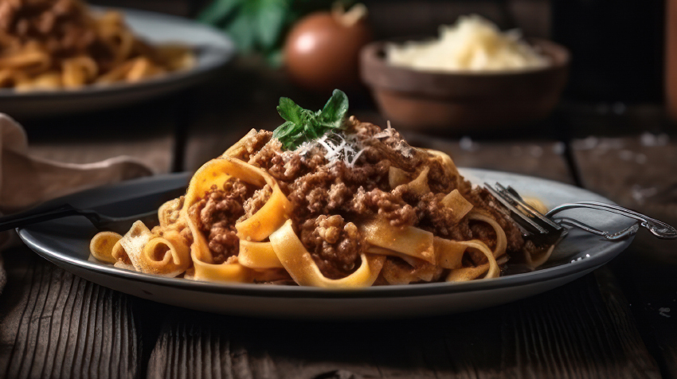

Ragu bolognese
Bolognese sauce (UK: /ˌbɒləˈneɪz, -ˈnɛz/, US: /ˌboʊlənˈjeɪz, -ˈniz/;[1] known in Italian as ragù alla bolognese
meat-based sauce in Italian cuisine, typical of the city of Bologna. It is customarily used to dress tagliatelle al ragù and to prepare lasagne alla bolognese.

- 2 tbsp olive oil
- 1 onion, diced large
- 2 carrots, peeled and diced
- 2 celery, diced
- 1kg ground beef
- 1/2 cup dry red wine
- 1 tbsp tomato paste
- 1 cup whole milk
- 3 cups any stock
- tagliatelle
- salt to taste
- grated pecorino romano
- Heat oil in a large heavy pot over medium-high heat. Add onions, celery, and carrots. Sauté until soft, 8-10 minutes.
- Add beef, veal, and pancetta; sauté, breaking up with the back of a spoon, until browned, about 15 minutes.
- Add wine; boil 1 minute, stirring often and scraping up browned bits. Add 2 1/2 cups stock and tomato paste; stir to blend.
- Reduce heat to very low and gently simmer, stirring occasionally, until flavors meld, 1 1/2 hours. Season with salt and pepper.
- Bring milk to a simmer in a small saucepan; gradually add to sauce. Cover sauce with lid slightly ajar and simmer over low heat, stirring occasionally, until milk is absorbed, about 45 minutes, adding more stock by 1/4-cupfuls to thin if needed.
- Bring a large pot of water to a boil. Season with salt; add pasta and cook, stirring occasionally, until 1 minute before al dente.
- Drain, reserving 1/2 cup pasta water. Transfer ragù to a large skillet over medium-high heat.
- Add pasta and toss to coat. Stir in some of the reserved pasta water by tablespoonfuls if sauce seems dry.